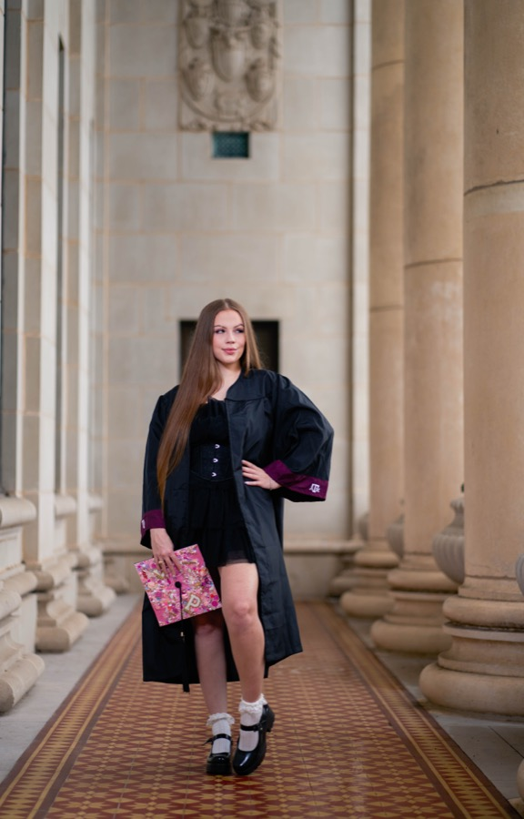
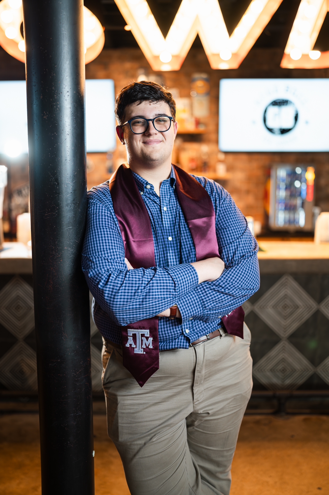

This Moment Deserves More Than a Selfie
You put in the work. Years of it. And now you're on the other side of something most people never finish. That kind of moment deserves to be captured by someone who actually gives a damn about how it looks, not just someone pointing a camera in your direction.
At Studio 23 TTL we've photographed graduation sessions for students across College Station and Bryan, TX and what we've learned is that the best graduation photos aren't accidents. They come from showing up prepared, shooting in the right light, and working with a photographer who treats your session like it matters. Because it does.


What Your Session Actually Looks Like
Every session is built around you. We're not running anyone through a conveyor belt. When you book with Studio 23 TTL you get a session that's been thought through before you even show up. We'll talk about your vision, what you want to feel in these photos, whether you want something formal and editorial or more relaxed and candid.
Most sessions run about 60 to 90 minutes and we typically mix studio portraits with outdoor locations around College Station. You walk away with a fully edited gallery, no watermarks, full resolution files you can actually print or post without it looking like a rough draft.
"The best graduation photos aren't taken. They're made — intentionally, in the right light, with someone who sees you."
The Best Spots to Shoot Near Texas A&M
College Station has some genuinely great backdrops if you know where to go. Kyle Field at golden hour when the stadium is empty hits different. Academic Plaza gives you that timeless Aggie feel that never goes out of style. The Century Tree is perfect for couples or anyone wanting that iconic A&M backdrop that people immediately recognize.
If you want something with more texture and edge, the Northgate District has a completely different energy — urban, moody, and honestly underused for graduation shoots. And if weather is a concern or you just want controlled professional lighting, our studio has premium backdrops and a setup designed specifically for portrait work.
What to Wear
This comes up in almost every session inquiry so here's the honest answer. Busy patterns and big logos pull focus away from you. Solid colors and subtle textures photograph better, especially against darker studio backgrounds. Dress one level above how you'd normally dress because graduation photos warrant it.
Always bring your cap and gown but also a second outfit. Variety in your gallery makes a real difference. And do your grooming the day before, not the day of. Things photograph better when they've had a little time to settle naturally.
When Should You Actually Book?
Earlier than you think. Spring graduation season fills up fast and if you're walking in May you should ideally be shooting in February or March. That way you have your photos in hand before the ceremony, not scrambling to get them after the fact when everyone else had the same idea.
If you already missed that window don't worry. We do post-ceremony cap and gown sessions too. The milestone doesn't expire just because the ceremony is over, and honestly some of our best work happens in the weeks after when there's no rush and no crowd.
Studio 23 TTL Is Ready When You Are
We serve College Station, Bryan, and Houston TX. We keep availability limited on purpose so every client gets the full attention their session deserves. If you've been thinking about booking just reach out and we'll figure out the right date and setup for you.